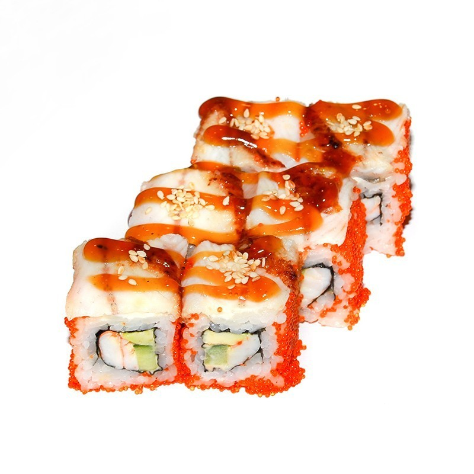

Ролл "Банзай" — это популярное блюдо японской кухни, которое сочетает в себе множество вкусов и текстур. Обычно он готовится на основе риса, нори (водорослей) и различных начинок. В зависимости от рецепта, состав может варьироваться, но часто в него входят:
1. Рис — краткозерный рис, приготовленный с уксусом, что придает ему характерный вкус.
2. Нори — сушеные водоросли, которые оборачиваются вокруг начинки и риса.
3. Начинка — обычно это сочетание свежих морепродуктов, таких как лосось, тунец или креветки, а также овощи, такие как авокадо, огурец или перец.
4. Соусы — для добавления вкуса могут использоваться соусы, такие как соевый соус, унаги (сладкий соус из угря) или острый майонез.
Ролл "Банзай" может иметь разнообразные вариации в зависимости от ресторана или повара. В некоторых случаях он может содержать хрустящие элементы, такие как обжаренные креветки или темпура, что добавляет текстурный контраст. Это блюдо часто подается с соевым соусом, маринованным императорским редькой и васаби для дополнительного вкуса. Ролл "Банзай" популярен как среди любителей суши, так и тех, кто впервые пробует японскую кухню, благодаря своей яркой презентации и насыщенному вкусу.